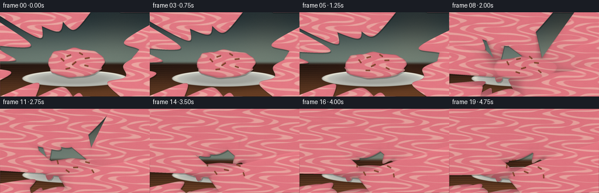
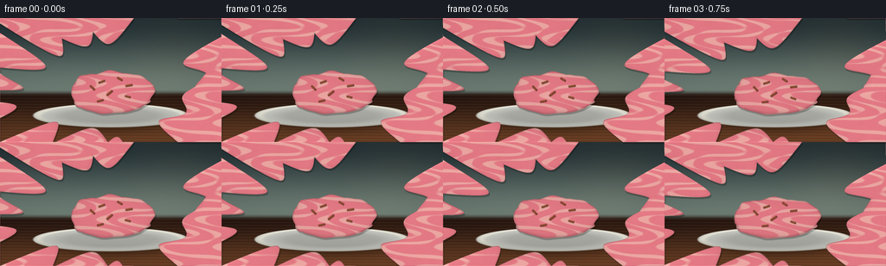
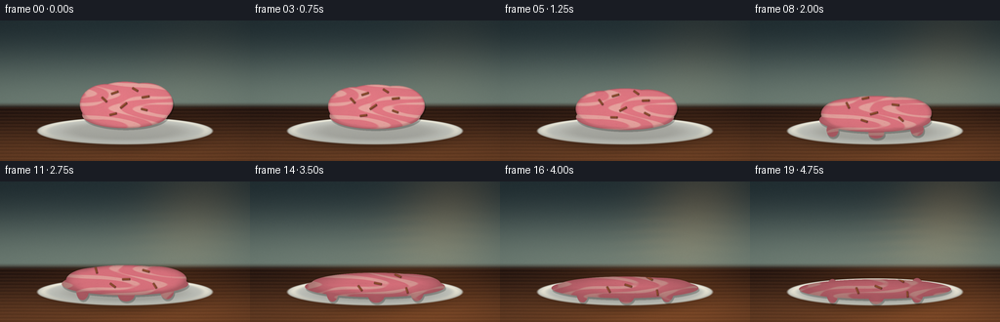
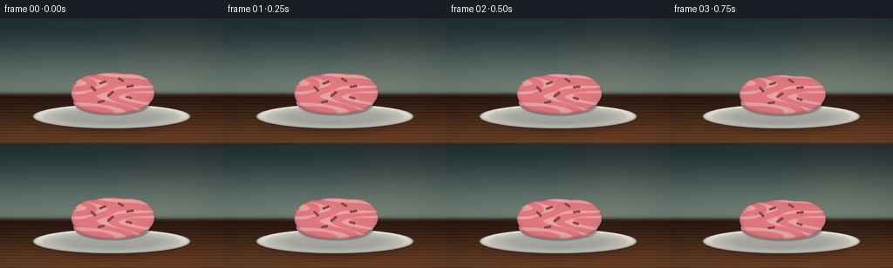

CODING AGENTS AS PIXEL WORLD MODELS
traex/DeepSeek-V4.1-Flash · phygen_099
点击播放 · 原生 RGB 像素
逐轮保存的候选
回放视频、检查图与代码变化。
每份候选均可单独播放。实际图片检查记录在下方工具轨迹中。
候选 01播放与检查图
点击播放 · 原生 RGB 像素


展开代码变化
--- 上一保存版本
+++ 本次保存版本
@@ -0,0 +1,421 @@
+"""Procedural RGB timelapse: a scoop of ice cream melting under rising heat."""
+
+from pathlib import Path
+import json
+
+import numpy as np
+from PIL import Image
+
+import artifact_io
+
+
+CASE_DIR = Path(__file__).resolve().parent
+SPEC = json.loads((CASE_DIR / "task_spec.json").read_text())
+WIDTH = int(SPEC["width"])
+HEIGHT = int(SPEC["height"])
+FRAMES = int(SPEC["frames"])
+SS = 4 # Supersampling factor for clean silhouettes and small highlights.
+
+
+def clip01(value):
+ return np.clip(value, 0.0, 1.0)
+
+
+def smoothstep(edge0, edge1, value):
+ t = clip01((value - edge0) / (edge1 - edge0))
+ return t * t * (3.0 - 2.0 * t)
+
+
+def mix(a, b, amount):
+ a = np.asarray(a, dtype=np.float32)
+ b = np.asarray(b, dtype=np.float32)
+ amount = np.asarray(amount, dtype=np.float32)
+ if amount.ndim:
+ amount = amount[..., None]
+ return a * (1.0 - amount) + b * amount
+
+
+def normalize_vector(x, y, z):
+ length = np.sqrt(x * x + y * y + z * z) + 1e-7
+ return x / length, y / length, z / length
+
+
+def blur3(field):
+ """Small separable blur used to soften the union of scoop lobes."""
+ kernel = np.array([0.18, 0.64, 0.18], dtype=np.float32)
+ out = field * kernel[1]
+ out += np.roll(field, 1, axis=0) * kernel[0]
+ out += np.roll(field, -1, axis=0) * kernel[0]
+ out2 = out * kernel[1]
+ out2 += np.roll(out, 1, axis=1) * kernel[0]
+ out2 += np.roll(out, -1, axis=1) * kernel[0]
+ return out2
+
+
+def background(X, Y, heat):
+ horizon = 0.595
+ wall_amount = smoothstep(horizon - 0.018, horizon + 0.035, Y)
+
+ wall_t = clip01(Y / horizon)
+ wall = mix(
+ np.array([0.115, 0.165, 0.180], dtype=np.float32),
+ np.array([0.390, 0.455, 0.420], dtype=np.float32),
+ smoothstep(0.0, 1.0, wall_t),
+ )
+
+ # A broad, soft window reflection makes the heat rise legible without
+ # introducing any objects that compete with the dessert.
+ light_band = np.exp(
+ -0.5 * ((X - (0.805 - 0.10 * Y)) / 0.145) ** 2
+ -0.5 * ((Y - 0.235) / 0.315) ** 2
+ )
+ wall += np.array([0.34, 0.20, 0.075], dtype=np.float32) * (
+ light_band * (0.075 + 0.34 * heat)
+ )[..., None]
+
+ table_t = clip01((Y - horizon) / (1.0 - horizon))
+ wood = mix(
+ np.array([0.125, 0.072, 0.052], dtype=np.float32),
+ np.array([0.355, 0.205, 0.115], dtype=np.float32),
+ smoothstep(0.0, 1.0, table_t),
+ )
+ grain = (
+ 0.032 * np.sin(2.0 * np.pi * (Y * 42.0 + 0.040 * np.sin(X * 13.0 + 1.1)))
+ + 0.014 * np.sin(2.0 * np.pi * (Y * 91.0 + 0.035 * np.sin(X * 31.0 - 0.6)))
+ )
+ wood += grain[..., None] * np.array([0.85, 0.52, 0.30], dtype=np.float32)
+
+ table_light = np.exp(
+ -0.5 * ((X - (0.665 + 0.15 * (Y - 0.70))) / 0.245) ** 2
+ -0.5 * ((Y - 0.775) / 0.255) ** 2
+ )
+ wood += np.array([0.34, 0.17, 0.055], dtype=np.float32) * (
+ table_light * (0.08 + 0.30 * heat)
+ )[..., None]
+
+ image = mix(wall, wood, wall_amount)
+
+ # A slight warm haze over the tabletop grows with the temperature.
+ haze = np.exp(
+ -0.5 * ((X - 0.50) / 0.34) ** 2
+ -0.5 * ((Y - 0.64) / 0.23) ** 2
+ )
+ image += np.array([0.20, 0.085, 0.025], dtype=np.float32) * (
+ haze * (0.018 + 0.070 * heat)
+ )[..., None]
+
+ radial = (X - 0.50) ** 2 + ((Y - 0.52) * 0.72) ** 2
+ image *= (1.0 - 0.18 * radial)[..., None]
+ return image
+
+
+def apply_heat_shimmer(image, X, Y, heat):
+ if heat <= 0.01:
+ return image
+ h, w, _ = image.shape
+ weight = np.exp(
+ -0.5 * ((X - 0.50) / 0.28) ** 2
+ -0.5 * ((Y - 0.405) / 0.155) ** 2
+ )
+ wave = np.sin(
+ 2.0 * np.pi * (Y * 13.0 - 1.5 * heat)
+ + 0.8 * np.sin(X * 11.0 + 0.4)
+ )
+ shift = (1.0 + 4.5 * heat) * SS * weight * wave
+ source_x = np.arange(w, dtype=np.float32)[None, :] + shift
+ source_x = np.clip(source_x, 0, w - 1).astype(np.int32)
+ return np.take_along_axis(image, source_x[..., None], axis=1)
+
+
+def draw_plate(image, X, Y, heat):
+ pcx, pcy = 0.500, 0.786
+ prx, pry = 0.354, 0.097
+
+ sdx = (X - (pcx + 0.012)) / (prx * 1.04)
+ sdy = (Y - (pcy + 0.018)) / (pry * 1.52)
+ shadow = np.exp(-2.3 * (sdx * sdx + sdy * sdy) ** 2)
+ image *= (1.0 - 0.35 * shadow)[..., None]
+
+ dx = (X - pcx) / prx
+ dy = (Y - pcy) / pry
+ radius = np.sqrt(dx * dx + dy * dy)
+ plate_mask = 1.0 - smoothstep(0.972, 1.008, radius)
+
+ upper = clip01(0.5 - dy * 0.5)
+ ivory = np.array([0.805, 0.810, 0.775], dtype=np.float32)
+ cool = np.array([0.455, 0.515, 0.520], dtype=np.float32)
+ warm = np.array([1.000, 0.845, 0.620], dtype=np.float32)
+
+ plate = ivory[None, None, :] * np.ones((image.shape[0], image.shape[1], 1), dtype=np.float32)
+ plate *= (0.88 + 0.13 * upper)[..., None]
+ plate = mix(plate, cool[None, None, :], 0.16 * smoothstep(0.55, 1.0, radius))
+
+ well = smoothstep(0.52, 0.91, radius)
+ plate *= (1.0 - 0.18 * (1.0 - well))[..., None]
+
+ rim = np.exp(-((radius - 0.925) / 0.052) ** 2)
+ plate += warm[None, None, :] * (
+ rim * (0.075 + 0.09 * upper + 0.045 * heat)
+ )[..., None]
+
+ lower_rim = np.exp(-((radius - 0.94) / 0.060) ** 2) * smoothstep(-0.1, 0.8, dy)
+ plate *= (1.0 - 0.15 * lower_rim)[..., None]
+
+ image = image * (1.0 - plate_mask[..., None]) + plate * plate_mask[..., None]
+ return image
+
+
+def interpolate_lobes(melt):
+ starts = np.array(
+ [
+ [0.500, 0.598, 0.153, 0.162, 0.158, 0.20],
+ [0.424, 0.596, 0.104, 0.143, 0.128, 1.20],
+ [0.579, 0.592, 0.113, 0.148, 0.138, 2.15],
+ [0.500, 0.671, 0.171, 0.094, 0.076, 2.85],
+ ],
+ dtype=np.float32,
+ )
+ ends = np.array(
+ [
+ [0.500, 0.756, 0.278, 0.058, 0.027, 0.20],
+ [0.365, 0.770, 0.135, 0.055, 0.017, 1.20],
+ [0.635, 0.764, 0.145, 0.058, 0.018, 2.15],
+ [0.500, 0.766, 0.305, 0.070, 0.014, 2.85],
+ ],
+ dtype=np.float32,
+ )
+ lobes = starts * (1.0 - melt) + ends * melt
+
+ # Side tongues appear once the mass starts flowing and stretch downward.
+ tongue = smoothstep(0.22, 0.82, melt)
+ tongues = np.array(
+ [
+ [0.330, 0.780, 0.025, 0.030 + 0.056 * melt, 0.016 * tongue, 0.4],
+ [0.668, 0.775, 0.028, 0.024 + 0.064 * melt, 0.017 * tongue, 1.6],
+ [0.505, 0.805, 0.034, 0.018 + 0.050 * melt, 0.013 * tongue, 3.0],
+ ],
+ dtype=np.float32,
+ )
+ return np.concatenate([lobes, tongues], axis=0)
+
+
+def dome_height(X, Y, lobe, melt):
+ cx, cy, rx, ry, height, phase = [float(value) for value in lobe]
+ dx = (X - cx) / max(rx, 1e-4)
+ dy = (Y - cy) / max(ry, 1e-4)
+ radius2 = dx * dx + dy * dy
+ angle = np.arctan2(dy, dx)
+
+ wobble = (
+ 0.085 * np.sin(3.0 * angle + phase + 0.7 * melt)
+ + 0.045 * np.sin(7.0 * angle - 1.7 * phase + 1.3 * melt)
+ + 0.024 * np.sin(11.0 * angle + 0.9)
+ )
+ field = 1.0 - radius2 + wobble * radius2 * radius2
+ z = height * np.sqrt(np.clip(field, 0.0, None))
+
+ if height > 0.03:
+ micro = (
+ 0.055 * np.sin(8.0 * dx + phase)
+ * np.cos(7.0 * dy - 0.6 * phase)
+ + 0.022 * np.sin(15.0 * dx - 4.0 * dy + 1.1)
+ )
+ z *= np.clip(1.0 + micro, 0.88, 1.12)
+ return z.astype(np.float32)
+
+
+def ice_cream_surface(X, Y, melt):
+ lobes = interpolate_lobes(melt)
+ surfaces = [dome_height(X, Y, lobe, melt) for lobe in lobes]
+ z = np.maximum.reduce(surfaces)
+ z = blur3(z)
+ z[z < 0.00020] = 0.0
+ return z
+
+
+def render_ice_cream(image, X, Y, z, heat):
+ mask = smoothstep(0.00015, 0.0015, z)
+
+ # A soft cast shadow under the body anchors it to the plate.
+ footprint = (z > 0.0004).astype(np.float32)
+ shadow = blur3(blur3(footprint))
+ shadow = np.roll(np.roll(shadow, 2 * SS, axis=0), 1 * SS, axis=1)
+ image *= (1.0 - 0.26 * shadow)[..., None]
+
+ gy, gx = np.gradient(z)
+ nx, ny, nz = normalize_vector(-gx, -gy / (HEIGHT / WIDTH), np.ones_like(z))
+
+ light_x, light_y, light_z = normalize_vector(-0.50, -0.66, 0.72)
+ half_x, half_y, half_z = normalize_vector(
+ light_x, light_y, light_z + 1.0
+ )
+
+ diffuse = clip01(nx * light_x + ny * light_y + nz * light_z)
+ specular = clip01(nx * half_x + ny * half_y + nz * half_z)
+ spec_power = 24.0 + 34.0 * heat
+ spec = specular ** spec_power
+ fresnel = (1.0 - clip01(nz)) ** 3
+
+ u = (X - 0.500) / (0.285 + 0.04 * heat)
+ v = (Y - 0.625) / (0.245 - 0.04 * heat)
+ swirl = (
+ np.sin(10.5 * u + 4.4 * np.sin(6.8 * v + 1.4) + 2.0 * np.sin(5.0 * u - 3.4 * v))
+ + 0.48 * np.sin(16.0 * v - 4.0 * u + 1.0 + 2.4 * heat)
+ )
+ cream_ribbon = smoothstep(0.22, 0.82, swirl)
+
+ strawberry = np.array([0.925, 0.455, 0.505], dtype=np.float32)
+ cream = np.array([1.000, 0.865, 0.775], dtype=np.float32)
+ deep_red = np.array([0.610, 0.205, 0.285], dtype=np.float32)
+ material = mix(strawberry, cream, 0.48 * cream_ribbon)
+
+ flecks = np.sin(39.0 * u + 3.0 * np.sin(17.0 * v)) * np.sin(
+ 34.0 * v - 2.0 * np.sin(13.0 * u + 0.8)
+ )
+ material = mix(material, deep_red, 0.11 * smoothstep(0.91, 1.0, flecks))
+
+ height_glow = clip01(z / 0.16)
+ ambient = 0.36 + 0.06 * height_glow
+ shade = ambient + 0.76 * diffuse
+ shade *= 0.76 + 0.24 * smoothstep(0.0, 0.055, z)
+
+ color = material * shade[..., None]
+ color += material * np.array([0.30, 0.075, 0.075], dtype=np.float32) * (
+ 0.42 * fresnel * (0.35 + 0.65 * heat)
+ )[..., None]
+ color += np.array([1.000, 0.925, 0.830], dtype=np.float32) * (
+ spec * (0.30 + 0.65 * heat)
+ )[..., None]
+
+ # A warm rim light from the rising sun on the right side of the scoop.
+ rim_light = clip01(nx * 0.78 + ny * 0.12 + nz * 0.20)
+ color += np.array([0.42, 0.165, 0.045], dtype=np.float32) * (
+ fresnel * rim_light * (0.20 + 0.35 * heat)
+ )[..., None]
+
+ color = np.clip(color, 0.0, 1.0)
+ image = image * (1.0 - mask[..., None]) + color * mask[..., None]
+ return image
+
+
+def capsule_mask(X, Y, center_x, center_y, length, width, angle):
+ px = (X - center_x) * WIDTH
+ py = (Y - center_y) * HEIGHT
+ ca, sa = np.cos(angle), np.sin(angle)
+ u = px * ca + py * sa
+ v = -px * sa + py * ca
+ half_length = max(length * WIDTH * 0.5, 0.1)
+ qx = np.abs(u) - half_length
+ qy = np.abs(v) - width * HEIGHT * 0.5
+ outside = np.sqrt(np.maximum(qx, 0.0) ** 2 + np.maximum(qy, 0.0) ** 2)
+ inside = np.minimum(np.maximum(qx, qy), 0.0)
+ distance = outside + inside - 0.65
+ return 1.0 - smoothstep(-0.7, 0.7, distance)
+
+
+def add_sprinkles(image, X, Y, z, melt):
+ sprinkles = [
+ (0.466, 0.508, -0.34, 0.026, 0.0065),
+ (0.527, 0.487, 0.52, 0.022, 0.0060),
+ (0.561, 0.544, -0.16, 0.027, 0.0068),
+ (0.430, 0.567, 0.76, 0.024, 0.0062),
+ (0.502, 0.611, -0.68, 0.029, 0.0070),
+ (0.572, 0.638, 0.25, 0.022, 0.0058),
+ (0.463, 0.666, -0.24, 0.025, 0.0063),
+ ]
+
+ result = image.copy()
+ for index, (cx, cy, angle, length, width) in enumerate(sprinkles):
+ spread = 0.11 + 0.025 * (index % 3)
+ px = cx + (cx - 0.5) * (0.20 + 0.55 * melt) + 0.010 * np.sin(4.0 * melt + index)
+ py = cy + spread * melt + 0.006 * np.cos(3.0 * melt + index * 0.8)
+ local_angle = angle + (0.35 + 0.18 * index) * melt
+ local_length = length * (1.0 - 0.10 * melt)
+ local_width = width * (1.0 - 0.20 * melt)
+
+ center_z = z[
+ min(HEIGHT * SS - 1, max(0, int(py * HEIGHT * SS))),
+ min(WIDTH * SS - 1, max(0, int(px * WIDTH * SS))),
+ ]
+ if center_z <= 0.0008:
+ continue
+
+ mask = capsule_mask(X, Y, px, py, local_length, local_width, local_angle)
+ mask *= smoothstep(0.0008, 0.0035, z)
+ if not np.any(mask > 0.01):
+ continue
+
+ shadow = capsule_mask(
+ X, Y, px + 0.0012, py + 0.0042, local_length, local_width, local_angle
+ )
+ result *= (1.0 - 0.16 * shadow * (1.0 - mask))[..., None]
+
+ light_edge = capsule_mask(
+ X,
+ Y,
+ px - 0.0007,
+ py - 0.0010,
+ local_length * 0.88,
+ local_width * 0.32,
+ local_angle,
+ )
+ base = np.array([0.225, 0.092, 0.052], dtype=np.float32)
+ shine = np.array([0.545, 0.285, 0.150], dtype=np.float32)
+ sprinkle_color = mix(
+ np.ones_like(result) * base,
+ np.ones_like(result) * shine,
+ light_edge,
+ )
+ result = result * (1.0 - mask[..., None]) + sprinkle_color * mask[..., None]
+ return result
+
+
+def render_frame(frame_index):
+ t = frame_index / max(FRAMES - 1, 1)
+ heat = smoothstep(0.0, 1.0, t)
+ melt = 0.12 * t + 0.88 * smoothstep(0.0, 1.0, t)
+
+ height = HEIGHT * SS
+ width = WIDTH * SS
+ yy, xx = np.mgrid[0:height, 0:width].astype(np.float32)
+ X = (xx + 0.5) / width
+ Y = (yy + 0.5) / height
+
+ image = background(X, Y, heat)
+ image = apply_heat_shimmer(image, X, Y, heat)
+ image = draw_plate(image, X, Y, heat)
+
+ z = ice_cream_surface(X, Y, melt)
+ image = render_ice_cream(image, X, Y, z, heat)
+ image = add_sprinkles(image, X, Y, z, melt)
+
+ # Gentle highlight bloom around the brightest specular pixels.
+ luminance = image.mean(axis=2)
+ bloom = smoothstep(0.84, 1.0, luminance)
+ image += bloom[..., None] * np.array([0.16, 0.115, 0.075], dtype=np.float32)
+
+ image = np.clip(image, 0.0, 1.0)
+ image = (image ** (1.0 / 1.08) * 255.0 + 0.5).astype(np.uint8)
+
+ # Stable, subtle sensor grain keeps the flat color fields from banding.
+ rng = np.random.default_rng(9100 + frame_index)
+ grain = rng.normal(0.0, 1.35, size=(height, width, 1)).astype(np.float32)
+ image = np.clip(image.astype(np.float32) + grain, 0.0, 255.0).astype(np.uint8)
+
+ downsampled = Image.fromarray(image).resize(
+ (WIDTH, HEIGHT), Image.Resampling.LANCZOS
+ )
+ return np.asarray(downsampled, dtype=np.uint8)
+
+
+def main():
+ frames = np.empty((FRAMES, HEIGHT, WIDTH, 3), dtype=np.uint8)
+ for index in range(FRAMES):
+ frames[index] = render_frame(index)
+ print(f"rendered frame {index + 1:02d}/{FRAMES}")
+ artifact_io.save(frames, CASE_DIR)
+ print(f"saved {FRAMES} frames at {WIDTH}x{HEIGHT}")
+
+
+if __name__ == "__main__":
+ main()
候选 02播放与检查图
点击播放 · 原生 RGB 像素


展开代码变化
--- 上一保存版本
+++ 本次保存版本
@@ -211,7 +211,8 @@
+ 0.045 * np.sin(7.0 * angle - 1.7 * phase + 1.3 * melt)
+ 0.024 * np.sin(11.0 * angle + 0.9)
)
- field = 1.0 - radius2 + wobble * radius2 * radius2
+ interior = np.clip(1.0 - radius2, 0.0, 1.0)
+ field = 1.0 - radius2 + wobble * interior
z = height * np.sqrt(np.clip(field, 0.0, None))
if height > 0.03:
可观测工具轨迹
实际执行的命令与返回图片。
命令 1exit 0
/bin/bash -c "pwd && rg --files -g 'prompt.txt' -g 'GENERATION_RULES.md' -g 'task_spec.json' -g '"'!*.mp4'"'"
命令 2exit 0
/bin/bash -c "git status --short && find . -maxdepth 2 -type f -printf '%p\\n' | sort | head -200"
命令 3exit 0
/bin/bash -c 'cat prompt.txt'
命令 4exit 0
/bin/bash -c 'cat GENERATION_RULES.md'
命令 5exit 0
/bin/bash -c 'cat task_spec.json'
命令 6exit 0
/bin/bash -c "sed -n '1,260p' artifact_io.py"
命令 7exit 1
/bin/bash -c 'python generate.py'
命令 8exit 0
/bin/bash -c 'python generate.py'
命令 9exit 0
/bin/bash -c "python - <<'PY'
from PIL import Image
from pathlib import Path
p=Path('inspection.png')
im=Image.open(p)
print(im.size, im.mode)
print('frame files', len(list(Path('frames').glob('*.png'))))
PY"命令 10exit 0
/bin/bash -c "python - <<'PY'
from PIL import Image
from pathlib import Path
import numpy as np
frames=[]
for p in sorted(Path('frames').glob('*.png')):
frames.append(np.asarray(Image.open(p)))
a=np.stack(frames).astype(np.float32)
print('shape',a.shape)
print('mean frame means', np.round(a.mean(axis=(1,2,3)),1))
print('frame diff means', np.round(np.abs(np.diff(a,axis=0)).mean(axis=(1,2,3)),2))
# contact sheet at 2x for visual inspection
sheet=Image.new('RGB',(512*4,288*5))
for i,im in enumerate(frames):
sheet.paste(Image.fromarray(im).resize((512,288),Image.Resampling.NEAREST),((i%4)*512,(i//4)*288))
sheet.save('.tmp/contact_2x.png')
PY"命令 11exit 0
/bin/bash -c "ls -lh .tmp/contact_2x.png inspection.png transition_check.png pixels.npz index.html && python - <<'PY'
from PIL import Image
im=Image.open('.tmp/contact_2x.png')
im.crop((0,0,1024,864)).save('.tmp/contact_part1.png')
im.crop((0,864,2048,1440)).save('.tmp/contact_part2.png')
PY"命令 12exit 0
/bin/bash -c "python - <<'PY'
from PIL import Image
import numpy as np
for idx in (0,5,6,10,14,19):
im=Image.open(f'frames/{idx:02d}.png').convert('RGB').resize((64,36),Image.Resampling.LANCZOS)
a=np.asarray(im)
print(f'\\nFRAME {idx}')
for y in range(0,36,2):
row=[]
for x in range(64):
top=a[y,x]; bot=a[min(y+1,35),x]
row.append(f'\\x1b[38;2;{top[0]};{top[1]};{top[2]}m\\x1b[48;2;{bot[0]};{bot[1]};{bot[2]}mâ')
print(''.join(row)+'\\x1b[0m')
PY"命令 13exit 0
/bin/bash -c "python - <<'PY'
from PIL import Image
import numpy as np
for idx in (0,5,6,10,14,19):
a=np.asarray(Image.open(f'frames/{idx:02d}.png').convert('RGB')).astype(float)
print(idx, 'min', a.min(axis=(0,1)).astype(int), 'max', a.max(axis=(0,1)).astype(int), 'mean', a.mean(axis=(0,1)).astype(int), 'unique', len(np.unique(a.reshape(-1,3),axis=0)))
PY"命令 14exit 0
/bin/bash -c "python - <<'PY'
from PIL import Image
import numpy as np
a=np.asarray(Image.open('frames/00.png')).astype(float)
print('corners', a[0,0],a[0,-1],a[-1,0],a[-1,-1])
print('top band',a[:10].mean(axis=(0,1)), 'bottom band',a[-10:].mean(axis=(0,1)))
# representative quantiles
for q in [1,5,25,50,75,95,99]: print(q,np.percentile(a.reshape(-1,3),q,axis=0).astype(int))
PY"命令 15exit 0
/bin/bash -c "python - <<'PY'
from PIL import Image
import numpy as np
for idx in [0,5,6,10,19]:
a=np.asarray(Image.open(f'frames/{idx:02d}.png')).astype(float)
# sample background and plate top/left
print(idx,'top-left',a[5,5].astype(int),'top-mid',a[5,128].astype(int),'mid-left',a[70,5].astype(int),'mid-right',a[70,250].astype(int),'bottom-mid',a[140,128].astype(int))
PY"命令 16exit 0
/bin/bash -c 'python generate.py'
命令 17exit 0
/bin/bash -c "python - <<'PY'
from PIL import Image
from pathlib import Path
import numpy as np
frames=[np.asarray(Image.open(p)).astype(float) for p in sorted(Path('frames').glob('*.png'))]
for i in [0,5,6,10,19]:
a=frames[i]
print(i,'mean',a.mean(axis=(0,1)).astype(int),'corner',a[5,5].astype(int),'plate',a[100,128].astype(int),'scoop',a[60,128].astype(int))
print('diffs',np.round(np.abs(np.diff(np.stack(frames),axis=0)).mean(axis=(1,2,3)),2))
PY"命令 18exit 0
/bin/bash -c 'command -v chafa || true; command -v viu || true; command -v jp2 || true; command -v img2txt || true; command -v ffmpeg || true'
命令 19exit 0
/bin/bash -c "python - <<'PY'
from PIL import Image
import numpy as np
# ANSI truecolor, 48x27 full frame using half blocks, no escapes to stderr
chars=' .,:;irsXA253hMHGS#9B&@'
for idx in (0,9,19):
im=Image.open(f'frames/{idx:02d}.png').convert('RGB').resize((64,36),Image.Resampling.LANCZOS)
a=np.asarray(im).astype(float)
print(f'\\nFRAME {idx}')
# 16-level ANSI truecolor output but only 32 cols x 18 rows, half blocks
for y in range(0,36,2):
line=[]
for x in range(0,64,2):
top=a[y:y+2,x:x+2].mean(axis=(0,1))
bot=a[y+2:y+4,x:x+2].mean(axis=(0,1)) if y+2<36 else top
# quantize color to reduce output; ANSI renders original in terminal
line.append(f'\\x1b[38;2;{top[0]:.0f};{top[1]:.0f};{top[2]:.0f}m\\x1b[48;2;{bot[0]:.0f};{bot[1]:.0f};{bot[2]:.0f}mâ')
print(''.join(line)+'\\x1b[0m')
PY"命令 20exit 0
/bin/bash -c "python - <<'PY'
from PIL import Image
import numpy as np
for idx in [0,6,12,19]:
a=np.asarray(Image.open(f'frames/{idx:02d}.png')).astype(float)
# Print region grid average around scoop: X 0.22..0.78, Y .32.. .85
print('\\nframe',idx)
for y0 in np.linspace(.30,.90,13)[:-1]:
row=[]
for x0 in np.linspace(.20,.80,16)[:-1]:
b=a[int(y0*144):int((y0+.05)*144),int(x0*256):int((x0+.0375)*256)].mean(axis=(0,1))
# classify S (scoop) / P plate / B bg / D dark by saturation and brightness
r,g,b_=b
if r>g*1.55 and r>150: c='S'
elif r>130 and g>120 and b_>110: c='P'
elif r>70 and g>60: c='b'
else:c='.'
row.append(c)
print(''.join(row))
PY"命令 21exit 0
/bin/bash -c "python - <<'PY'
from PIL import Image
import numpy as np
chars=' .:-=+*#%@'
for idx in [0,3,6,9,12,15,19]:
a=np.asarray(Image.open(f'frames/{idx:02d}.png').convert('L').resize((64,36),Image.Resampling.LANCZOS)).astype(float)
print(f'\\nFRAME {idx:02d}')
for row in a:
print(''.join(chars[min(9,int(v/256*10))] for v in row))
PY"保存候选 2 份；完成命令 21 次；可验证图片返回 0 张。原始 API 响应与完整日志保留在本地。